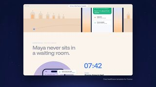

点封面在页面里播放（Vimeo / YouTube / X 需要代理；Vimeo 若没自动开始，再点一下播放键）。觉得好就点「喜欢」，有想法就写在下面的框里保存，我每天出日报前会读，存进偏好和审美库；会多找同类，但每天仍保持类型分散。
目录 01 Beauty in Sequence（60 部电影拼成一分钟，补课 2025）02 Loading states don't have to be boring（粒子拼出银行卡）03 Astrantia 花开（Houdini 习作）04 Lake Sessions（切片字海报动效）05 Butter 官网（GSAP 本周最佳网站）06 浏览器里的雨林星球（three.js）07 雨夜高速 26 秒（全部用代码做）08 Down the Rabbit Hole 2026 音乐节动态视觉09 Netflix 广告：鱼缸里的美西螈10 FITC Toronto 2026 开场片头（补课 2026-04）－ 剔除（15 条，另有 1 条重复转发没算）拆 细拆：Beauty in Sequence 小窗接力
01 剪辑节奏 转场
Beauty in Sequence（60 部电影拼成一分钟，补课 2025）
Nikita Didenko / Tak Ostro · YouTube 2025（Motionographer 报道） 【看过视频】
YouTube 55 秒已下载，完整看过（含声音）
2025 年两座 Telly 剪辑金奖，是补课旧作
片段来自 2024 年的电影，版权归各片方
好在哪 55 秒，黑底上开着几个大小不一的「小窗」，每个窗里放一部电影的片段。动作从一个窗接到下一个窗：有人被甩出左窗，右窗里就有人撞开门；开枪、爆炸、击球这些音效正好落在换窗的那一下。越到后面窗越多、换得越快，最后一个网球手接住球，画面定格缩回成一张海报可借 讲「几件事其实是一回事」时，可以把几段素材放进黑底小窗里，让一个动作从这个窗跑到那个窗。下面有细拆
展开全文
02 UI动效 代码动画
Loading states don't have to be boring（粒子拼出银行卡）
Vedant Lad（@Vedantdzn），60fps 转发 · X 2026-11-10 【看过画面（抽帧）】
24 秒已下载，抽 12 帧看过
下半屏有作者的调试面板（Passing / Filling、Kintsugi 开关）
字体看着像系统无衬线，未识别
好在哪 约 24 秒：白色弹窗里写着「Preparing your card」，一张银行卡由灰色细颗粒从左往右一点点「打印」出来，下面百分比从 17% 跳到 92%。拼完一瞬间变成深紫色实卡，外圈一圈粉色光晕，再翻到背面；后半段演示给卡面加金色裂纹（金缮）可借 讲「模型在生成」「数据在加载」：别放转圈，用颗粒按形状慢慢填满，进度数字跟着走，填满那一帧换成实物质感。颜色只有灰白和一种强调色
展开全文
03 3D质感 MG
Astrantia 花开（Houdini 习作）
Glendon Chua（新加坡），Houdini School 转发 · X 2026-11-09 【看过画面（抽帧）】
原帖有 3 段视频，下载并抽帧看了第 1 段（约 10 秒）
另外 2 段只看了封面
好在哪 约 10 秒竖屏：纯黑底上一朵粉紫色的星芹，花瓣从合拢慢慢向外摊开，中间几十根带小圆头的花蕊一根根立起来散开。只有一盏侧上方的光，花瓣边缘半透明，背景什么都没有可借 竖屏开头 3 秒的「主物体登场」可以这样：黑底、一盏光、一个物体从收着到展开，不加字不加特效。Three.js 里用一组花瓣按序号错开旋转角就能近似
展开全文
04 字体版式 MG
Lake Sessions（切片字海报动效）
WrongNebula（@WrongNebula） · X 2026-11-09 【看过画面（抽帧）】
30 秒已下载，抽 12 帧看过
这是 Plakt app（作者说免费、即将上线）的演示，不是委托作品
字体未识别（粗无衬线）
好在哪 约 30 秒：只用黑和荧光黄绿两色。「Lake」「Sessions」「Jazz」「Montreux」这些词被横着切成很多条，每条错开滑动，字像被水波拉开又合上；中间几次缩小成一张完整的音乐节海报，再放大回到单个词可借 竖屏金句可以只做一个词：横切成 10 来条，各自延迟一点滑进来拼成完整的字。两色、无衬线粗体就够。作者说这是他做的 Plakt app 的演示
展开全文
05 转场 UI动效 3D质感
Butter 官网（GSAP 本周最佳网站）
ToyFight（@toy_fight）/ GSAP · X 2026-11-11 【看过画面（抽帧）】
14 秒已下载，抽 12 帧看过
用到 ScrollTrigger、Three.js、WebGL（原帖写的）
字体未识别
好在哪 约 14 秒：黑底上，网站的每一页被做成一块块白色立方体的面，排成一排慢慢转过来，转到正面时让你看清这一页，再转向下一块。底部始终压着白色 Butter 字标可借 一期视频要列好几个工具或网页时：把截图贴到一排立方体上，转一面讲一个，比左右滑动更有体积感。只要黑底和白色截图，不加别的颜色
展开全文
06 代码动画 3D质感
浏览器里的雨林星球（three.js）
Karim Beyrouti（@KarimBeyrouti），threejs 转发 · X 2026-11-11 【看过画面（抽帧）】
原片 3 分 28 秒，下载前 2 分钟并抽 12 帧看过
有互动版网页，可以自己飞（原帖有链接）
好在哪 前 2 分钟：从太空看一颗暗绿色星球，镜头俯冲穿过云层，掠过山脊和火山口湖，中间又拉回轨道看了一次，最后停在雾气里的山谷，天边是橙色晚霞。云有厚度，近处的山清楚、远处被雾吃掉可借 讲「从宏观到微观」（比如从地球到一台服务器）：用一个连续的推镜头，中间穿过一层云或雾当过渡，不切镜头。远处加雾是最便宜的纵深感
展开全文
07 代码动画 剪辑节奏 3D质感
雨夜高速 26 秒（全部用代码做）
SF Create（@sfc43588），threejs 转发 · X 2026-11-11 【看过画面（抽帧）】
26 秒已下载，抽 12 帧看过
和 11-09 推过的「夜行列车」是同一个作者
好在哪 26 秒，像一段行车记录：雨夜的城市高架，车尾灯在湿路面上拖出红色倒影。车内视角、车外跟拍、仪表盘特写几个机位来回切，进隧道后顶灯一排排掠过，最后挡风玻璃上的雨点把城市灯光糊成光斑可借 代码动画也能「剪」：同一个 3D 场景放 3、4 个机位来回切，比一个机位绕到底更像片子。雨夜只用两种光：暖白路灯和红色尾灯
展开全文
08 片头片尾 字体版式 3D质感
Down the Rabbit Hole 2026 音乐节动态视觉
Merijn Hos（艺术指导）/ Stash · Stash 2026-11-02 【看过画面（抽帧）】
45 秒已下载，抽 12 帧看过
动画制作方报道里没写清，只写了 Merijn Hos 做艺术指导
衬线字体未识别
好在哪 45 秒：镜头在一片奇幻植物里慢慢穿行，叶子和花都有 3D 体积和柔光。每过几秒，一个乐队名用细衬线白字浮在画面正中，背景的花同时换一种颜色。最后落在玫红色背景上的完整阵容表可借 片头列名单的做法：背景一直在缓慢运动，字只出现在正中、一次一个名字，每换一个名字背景换一种主色。字用细衬线，和柔软的画面配
展开全文
09 实拍剪辑 剪辑节奏
Netflix 广告：鱼缸里的美西螈
导演 Vania & Muggia（Iconoclast）· Mother London · 特效 ETC · Stash 2026-11-11 【看过画面（抽帧）】
90 秒已下载，抽 12 帧看过
美西螈是 CG（ETC 做的），场景是实拍
没听台词，剧情是按画面猜的
好在哪 约 75 秒正片：客厅鱼缸里几条鱼和一条美西螈，透过玻璃能看到后面亮着的电视。后半段美西螈出了鱼缸，在木地板和家具之间爬，最后趴在地上，背景虚着一个人。多数镜头放在鱼缸或地板的高度，暖黄客厅光和绿色水光交替出现。结尾接 Netflix 红色片尾可借 想讲一个「旁观者」视角：机位一直放在主角的高度（这里是鱼缸水面），观众自然就站到它那边。暖色室内光配一处冷色光源，层次就出来了
展开全文
10 片头片尾 字体版式 MG
FITC Toronto 2026 开场片头（补课 2026-04）
Escafandra（Julieta Tobon、Luis Mejia）/ Stash · Stash 2026-04-27 【看过画面（抽帧）】
下载了前 2 分钟并抽 12 帧看过（全片更长）
颜色比日常推的更跳，偏手作感，放这里当片头列名单的参考
字体未识别（手写感粗字）
好在哪 一个设计大会的 25 周年片头，主题叫「重生」。每个讲者名字配一种手作图形：圆点墙、同心圆纹、齿轮圆盘、剪纸色块，字是手写感的红色或蓝色。底色几乎都是近黑的纸面质感，每个名字只用两三种颜色可借 给一串名字做片头（比如一期里要介绍的几个工具）：每个名字配一个专属的简单图形和动作，底色统一成同一种暗纸纹，整套就不散。适合想要「手作感但不粗糙」的时候参考
展开全文
剔除（15 条，另有 1 条重复转发没算） Volorf（jhey 转发） · 硬件实拍录像，没有动效可学
Active Theory / Awwwards · 紫色太空加 AI 安全宣传，3 秒里看不出手法

Dominik Mészáros（@kcinimoDM） · 节奏不错，但它是 11-11 剔过的同一个 Framer 模板
Stefano De Rosa / Codrops · App 界面快剪合集，太杂
Vimeo Staff Pick · 毛毡浣熊定格动画，偏可爱手作
Branch Education · 3D 硬盘很好看，但 11-07 你踩过 Branch 的讲解片，这类先少推
今日细拆 · 剪辑节奏与转场
黑底小窗接力：让动作从一个画面跑进另一个画面 【看过视频】完整看过 55 秒（含声音），关键几秒另外密抽帧核对过 塞尔维亚剪辑师 Nikita Didenko 给 YouTube 频道 Tak Ostro 剪的一分钟作品，用了 2024 年 60 多部电影的片段，没有旁白也没有字。2025 年拿了两座 Telly 剪辑金奖。它好学的地方不在素材，在那套「黑底 + 浮动小窗」的版式：每个片段放在一个没有边框的矩形窗里，窗会滑进来、推开别的窗、变宽变窄，动作和声音带着观众从一个窗走到下一个窗。
结构（秒数是大约值） 0–1 秒：第一个窗出现，黑底 1–31 秒 铺垫：同时开着 1 到 3 个窗，大约 1.5 到 2.5 秒换一个新片段 32–42 秒 加速：大约 1 到 1.5 秒换一次，窗开始频繁变形、互相叠 43–50 秒 高潮：0.5 到 1 秒一换，49 秒左右三个竖条窗同时闪 50–53 秒 收尾：网球手接住球，画面定格，窗缩小，周围淡入一整墙电影海报，它变回其中一张 53–55 秒：深灰底上 Tak Ostro 标志用切片字拼出来 节奏 切点基本由片段自己的声音决定：枪声、拳头、撞击、爆炸，每一下都落在开新窗或换窗的那一帧，底下再垫一条电子乐鼓点，两者对齐。
前 30 秒故意慢，让你看懂「窗和窗在接力」这套规则；规则立住以后才加速，最后十秒密到来不及看清，再用一次定格把节奏刹住。
三招转场（都能直接搬） 跨窗接力（约 11–13 秒）：一辆车从右窗驶出，左边马上滑进一个新窗，车（或下一段的骑车人）接着往同一方向走。黑色空白被当成同一个空间 人推窗变形（约 15–16 秒）：片段里的人往两边推门，窗的左右边缘同时往外撑开，好像窗框是画里的东西 上下势能交接（约 19–21 秒）：上面窗里的人滚下山坡，刚到下边缘，正下方就开一个新窗，另一个人摔在车头上，往下的力接上了 版式细节（看画面） 底色纯黑，窗没有边框、没有投影、没有圆角，就是直角矩形 窗的比例会变：宽银幕、方形、竖条都有，跟着画里的动作变 同时最多三四个窗，平时一两个，留很多黑 收尾的海报墙底色是深灰，和前面的纯黑区分开 在 Remotion 里怎么做（我的做法建议） 每个片段一个 <OffthreadVideo>，外面套一个 overflow: hidden 的 div 当窗；窗的 x、y、宽、高都用 interpolate 或 spring 驱动 把声音峰值时间（枪声、撞击）先标成一个帧号数组，窗的出现、滑走都卡在这些帧上 跨窗接力：前一个窗里物体出画的那一帧，下一个窗从同一侧滑入，滑入方向和物体运动方向一致 收尾定格：用 <Freeze> 冻住最后一帧，再把窗 scale 到海报大小，周围的海报网格用 opacity 淡入 放进鱼知道的片子里怎么用 做「这周 5 个 AI 新功能」这类合集时，把每个功能的录屏放进黑底小窗，前一个演示里鼠标往右拖，下一个窗就从右边滑进来接着动；按键点击声当切点。最后定格在一个窗上，缩回到一张汇总图里，正好当片尾。
比全屏硬切多了「空间感」，又比花哨转场克制，素材全是录屏也能用。
看 YouTube ↗ Motionographer 报道 ↗
X（@60fpsdesign、@jh3yy、@codrops、@awwwards、@greensock、threejs 转发、@cleoabram、@kcinimoDM、@HoudiniSchool、关键词搜索）、Vimeo Staff Picks、Motionographer、Stash、Codrops、YouTube（Apple、Cleo Abram、Kurzgesagt、Vox、Branch Education、3Blue1Brown、Wendover、Johnny Harris、MKBHD、PolyMatter、Jared Owen、Animagraffs）
 YouTube
YouTube